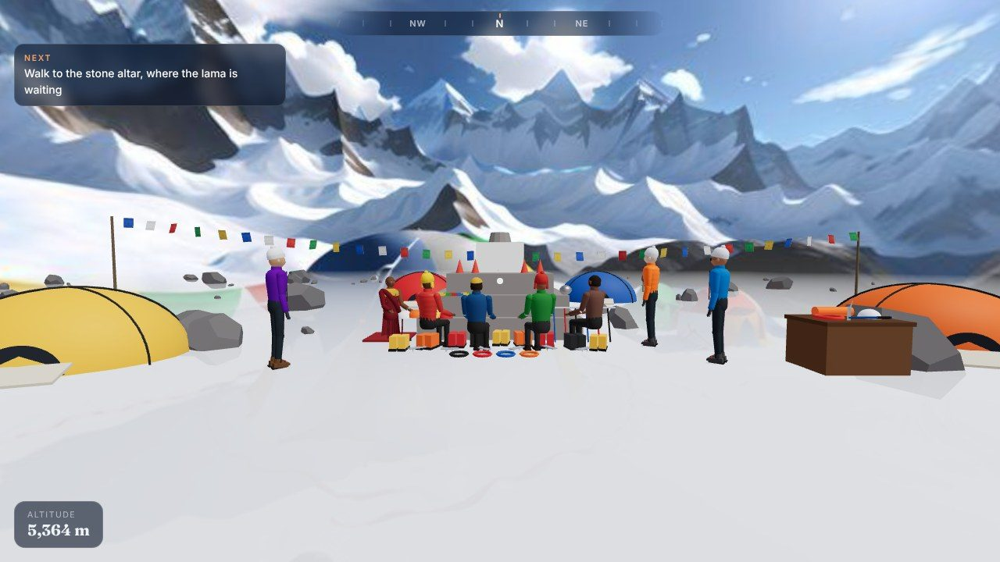
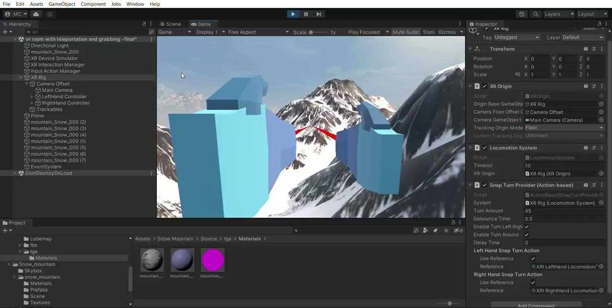
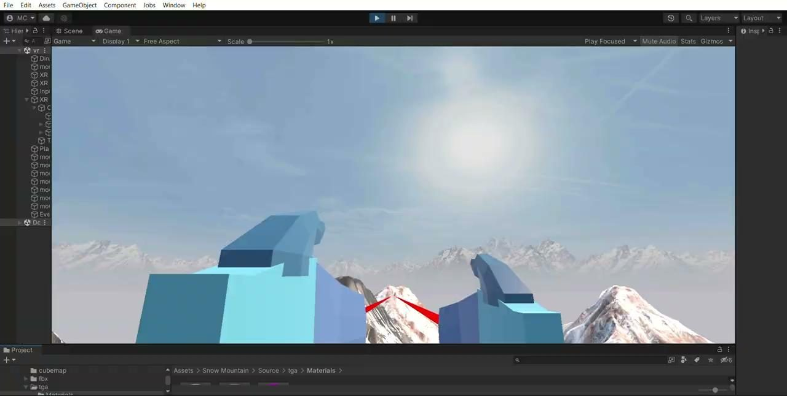
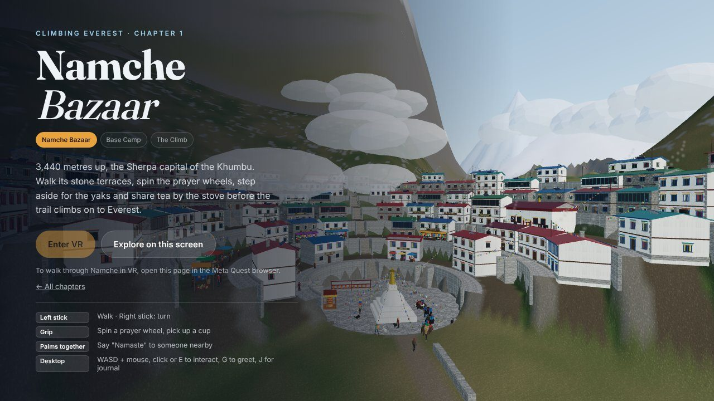
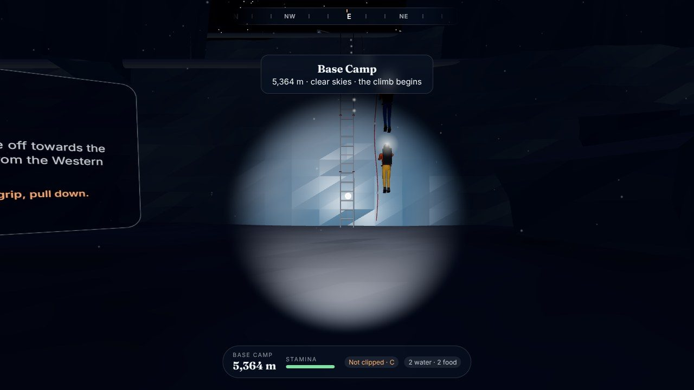
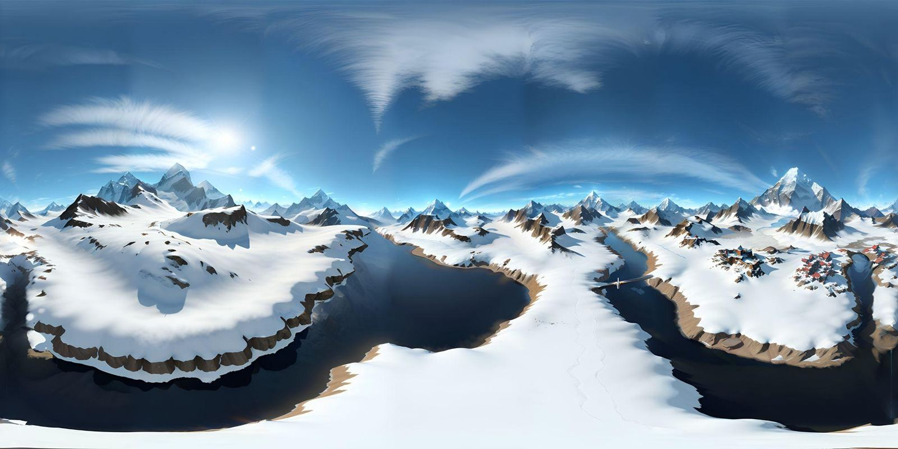
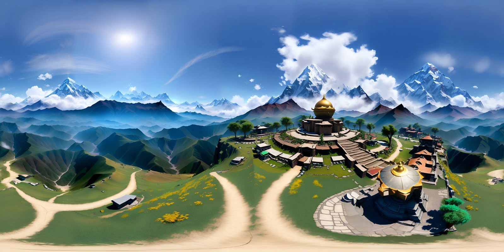
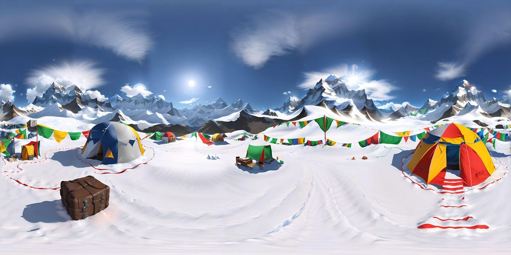
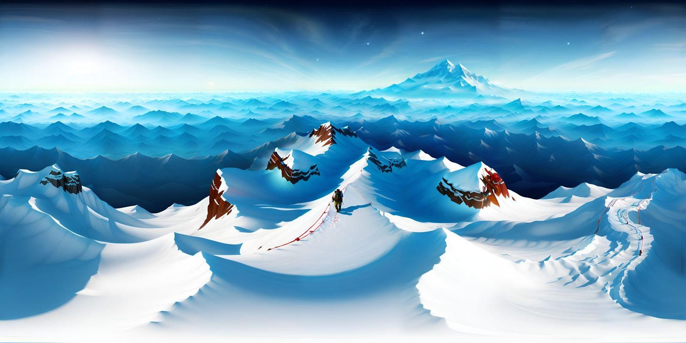

Plays on a desktop browser, or in the Meta Quest browser with “Enter VR”.
Everest is out of reach for almost everyone: it takes extreme fitness, serious risk and a budget most people never have.
Designed a VR journey that starts in Namche Bazaar, joins the puja at Base Camp, then climbs to the summit. The experience comes first, the game second.
A playable build that runs in a desktop browser or the Meta Quest browser. Rebuilt in 2026 from a 2023 course project.

Climbing Mount Everest takes extreme fitness, serious risk and a budget most people will never have. I wanted to design a VR experience that lets anyone feel what the journey is like — the thin air, the cold, the ice, the culture on the way up — without the danger.
It began as a graduate VR course project in 2023 that I never finished. In 2026 I came back to it and rebuilt it with a clearer idea: the experience matters more than the game. So the trek to Base Camp comes first, and the climb comes second.
I started with a literature review and a look at the existing Everest apps. The case for VR kept coming back to the same points: it is safe, it is far cheaper than a real expedition, and it can teach geography, history and culture along the way as well as entertain.
I reviewed two existing products, Everest VR (Sólfar Studios) and The Climb (Crytek). Both centre on the climb itself. I wanted the journey to the mountain — the villages, the rituals, the pace — to carry equal weight.
The first version was written up as a VR project design document: how users move, what they can grab, what they feel and hear, and what the headset has to hit to stay comfortable.
Teleportation for comfort, plus hand-over-hand climbing on steep sections.
Ice axe, rope and carabiner, oxygen tank, backpack, food and water — no sockets, everything is held.
Vibration and sound when the axe bites into ice or the ice cracks, when weather turns, or when you lose grip. Wind and crunching snow in 3D.
A start menu, a gear menu at Base Camp, and optional compass, mini map and interactive map. Colour and contrast set for readability.
90 fps (about 11 ms per frame), 500,000 triangles, 2–3k draw calls and fully baked lighting.
Audio narration on the history and geography of Everest, so the experience teaches as it goes.
The original Unity prototype was deliberately rough: a snowy 360° skybox, placeholder blocks standing in for hands and a few interactions wired up. It proved the idea, but it stalled before it became a game.


When I returned to the project I changed its shape. Instead of dropping the player straight onto the mountain, the experience now follows the real journey in three chapters. I read first-hand accounts from climbers and trekkers (expedition dispatches and trek journals) and used how they describe the place — the light, the colour, the sounds — to guide the visuals.


Each chapter sits inside a 360° panorama, so the world feels huge from the first second while the geometry stays light enough for a headset.




The controls try to feel like what climbers actually do. On a headset the body does the work; on a desktop everything has a keyboard and mouse equivalent, so anyone with a link can try it.
Designing for VR means designing for a body and a place, not a screen. The strongest moments in this project aren’t the mechanics — they’re the quiet ones: the first look down a Namche street, or the puja before the climb. Finishing it also reminded me that an idea you shelved can come back better if you change what it is about.
Open it on a computer, or in the Meta Quest browser and press “Enter VR”.